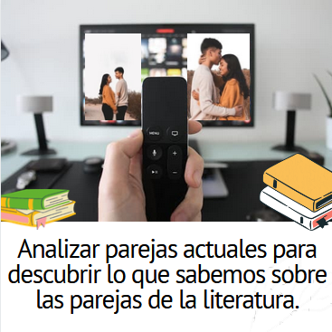

¿No es verdad, ángel de amor, que en esta apartada orilla, más clara la luna brilla y se respira… mucho PEOR? … Pero, ¿qué te pasa? ¿A qué hueles? ¿Estás asustado de empezar? ¡No te preocupes! Sí que sabes ya algo del amor en la literatura medieval, pero… ¿cómo decírtelo? Es que NO SABES QUE LO SABES, y quizás te des cuenta de ello mejor si empezamos por parejas, no de hace 500 años, sino de hoy mismo. Prueba con lo siguiente.
Definición:
Conjunto de libros escritos por autores nacidos entre los años 1100 y 1499.
Ejemplo:
El Conde Lucanor es una obra de literatura medieval.
Lectura facilitada
Retor te propone que leas estas frases para que recuerdes lecturas estudiadas en cursos anteriores. Empieza la lectura con las siguientes oraciones: ¿No es verdad, ángel de amor, que en esta apartada orilla, más clara la luna brilla y se respira…mucho peor? Seguro que te suenan estas palabras que acabas de leer. Estas frases hablan del amor de hace muchos años. Seguro que tú sabes muchas cosas del amor en la literatura. Para que tú compruebes todo lo que conoces sobre el amor empieza a analizar las parejas de amor de ahora.
Apoyo visual

Lumen dice ¿Se te enciende la bombilla?
¿De qué te suena la tarjeta de la isla desierta? ¡Qué paisaje tan caribeño! En los últimos años se han hecho célebres algunos programas que ponen a famosetes a ligar en estos lugares tan mega super romantiquísimos. Fíjate bien en cómo actúan las parejas allí. ¿Cómo llamas tú a lo que hacen? ¿“Ligar”, “tontear”...? ¿Y qué pasos siguen para conquistar a la damisela o damiselo? ¿Visten elegantes o van “casual”? ¿Qué tipo de conversación tienen, hablan solo de lo que le gusta a uno de ellos o conectan con los temas? ¿Y el lenguaje corporal: cómo se miran, cómo se tocan? ¿Se pasan de la raya?
Después da un paso más: eso mismo que observas en los programas de la tele, ¿lo encuentras en tu entorno? ¿Conoces a gente enamorada o a parejas que se comporten igual? Observarás que se repiten ciertos patrones: a lo mejor un miembro de la pareja se siente obligado a invitar cuando salen, o está más atento al otro, o siempre está con los celos preparados para explotar…
Y por último: ¿no te suenan parejas literarias que se comporten así? ¿Qué me dices de un tal Romeo y una tal Julieta? Que en nuestra literatura española son Calisto y Melibea. O a lo mejor en dibujos animados, series y pelis has presenciado historias de amor eterno entre personajes inolvidables. ¿Quiénes eran? ¿Se parecen a esas parejas reales de las que habéis hablado en grupo? ¡Cuéntalo, que esto es salseo del bueno!
Definición:
Tipo de paisaje situado en el mar Caribe o en sus costas.
Ejemplo:
La playa tenía un paisaje caribeño, con aguas claras y clima cálido.
Definición:
Algo o alguien que tiene mucha fama o es conocido por muchas personas.
Ejemplo:
La Navidad es muy célebre en España.
Definición:
Forma de relacionarte con otra persona que te gusta.
Ejemplo:
Me dijo frases bonitas para ligar conmigo.
Definición:
Forma de atraer a otra persona para conquistar sus sentimientos.
Ejemplo:
Se llevó tonteando con él toda la tarde en la playa.
Definición:
Lucirse delante de otra persona hasta conseguir su atención.
Ejemplo:
Aquella chica no deja de ronear en la fiesta.
Definición:
Cuando hablamos de moda hace referencia a la ropa informal, no elegante.
Ejemplo:
En aquella tienda se vende ropa de estilo casual.
Definición:
Modelo o algo que se repite muchas veces.
Ejemplo:
La formación de las hojas según su variedad siguen unos patrones.
Definición:
Sentimiento que un individuo puede experimentar cuando cree que la persona amada quiere a otra persona.
Ejemplo:
Sintió celos cuando le dio un beso a su amigo.
Definición:
Ejemplo:
Lectura facilitada
Observa la imagen de la isla desierta. Piensa tú en programas de la tele donde los participantes buscan parejas. Algunos programas de amor se celebran en islas desiertas. Características de los concursantes de los programas de amor:
Actúan de diferentes formas.
Visten de diferentes formas.
Hablan de diferentes cosas.
Miran de diferentes formas.
Se tocan de diferentes formas.
Ahora piensa tú en parejas enamoradas de tu alrededor. Estas parejas se comportan de formas diferentes:
Cuando invitan en una tienda.
Cuando tienen celos.
Cuando se enfadan.
Por último piensa tú en parejas literarias enamoradas:
Calisto y Melibea.
Romeo y Julieta.
También piensa tú en historias de amor de pelis.
Opción A: no me quiere como quiero que me quiera
Compara la letra de las dos versiones de la canción Hawái que te presentamos. La original es de Maluma y la otra es una réplica de Beatriz Luengo. Para ello, te proponemos que señales qué ideas de las siguientes se ven reflejadas en cada versión. Para ello debéis agruparos en grupos de máximo 5 alumnos y alumnas. Una vez hayáis extraído al menos dos ideas principales de cada canción, debéis debatir sobre las mismas. Finalmente, clasifica las ideas que se proponen más abajo según correspondan a la versión de Maluma o Beatriz Luengo.
Si tienes dudas, consulta el apartado "¿tienes dudas?" que está más abajo.
Kardia dice ¿Tienes el corazón...?
¿No te gusta el reggaetón ni Maluma? ¿El amor no ha llamado nunca a tu puerta? Tranqui, a tu alrededor tienes ejemplos de gente enamorada: en las redes sociales, en el recreo, en la calle…
¿O te preocupa no tener ni idea de por qué ejercicio empezar? Buena noticia: es facilísimo, porque a medida que comiences uno de ellos, te darás cuenta de que ya sabes algunas cosas sobre el amor y no te resulta tan difícil. Además, te ofrecemos muchas alternativas para trabajar el amor.
¿Todavía de bajón? ¡A lo mejor es que Cupido no te ha lanzado su flecha! Sigue el ritmo de este REA y ya verás que, poco a poco, tu corazón comenzará a latir acompasado a las historias de amor que vas a conocer.
Definición:
Un estilo de música fácil de bailar con movimientos repetitivos y muy sensuales.
Ejemplo:
En la fiesta pusieron música reggaetón.
Definición:
Figura de un niño con una flecha que representa el amor.
Ejemplo:
Cupido me ha enviado una flecha de amor.
Lectura facilitada
Tú ves a personas enamoradas en diferentes lugares. Por ejemplo:
En internet.
En el recreo.
En la calle.
En la tele.
Para que tú conozcas más cosas del amor elige el ejercicio más fácil.
Quizás tú nunca te has enamorado. No te preocupes. Sigue las actividades de este REA y Cupido te ayudará con historias de amor.
¿Tienes dudas?
¡Es muy fácil! Debéis comparar la letra de las dos versiones de la canción Hawái. Seguro que la conoces. La original es de Maluma y la otra es una réplica de Beatriz Luengo. Para ello, debéis, por grupos (máximo 5 personas), extraer las ideas principales de cada una de las canciones (al menos dos de las ideas principales).
Posteriormente, debéis comprobar si esas ideas coinciden con las ideas que proponen el resto de grupos. ¿Hemos coincidido? ¿Hay ideas muy diferentes? ¿Alguna que nos haya sorprendido? ¡Qué empiece el debate!
Finalmente, debéis clasificar las ideas mencionadas, en función de la canción a la que pertenezcan. Para ello sólo hay que hacer clic sobre cada idea y colocarla en el lugar correcto.